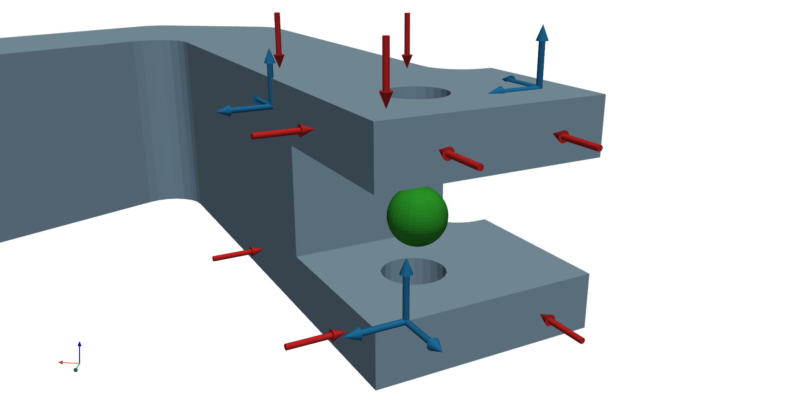
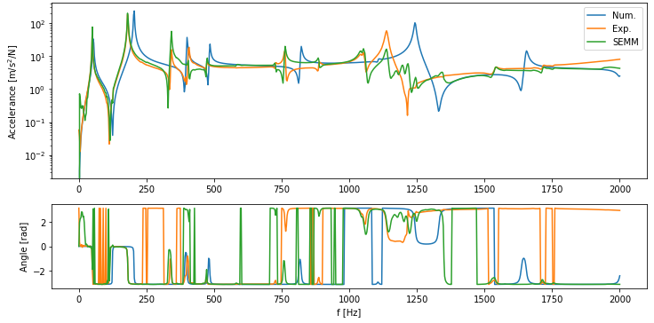

Basic examples¶
This examples show how to use basic features of pyFBS. Explore this basic examples to get familiar with the pyFBS workflow.

Static display¶

Interactive positioning¶

FRF synthetization¶

Virtual Point Transformation¶

System Equivalent Model Mixing¶